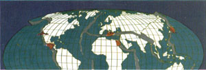

OPEN ROAD
EVEN BEFORE RICHARD NIXON AND Henry Kissinger first went to China, stories had begun trickling out of the People's Republic about the local penchant for detecting the onset of earthquakes. Barnyard animals and even wild birds, it was touted, behaved oddly in the minutes and sometimes hours before the event.
The news caused considerable stir in northern California, where I lived at the time, and not a few nervous types promptly went out and bought themselves chickens, rabbits or goats and began keeping a sharp eye peeled. Some of these same people, incidentally, had already taken to sleeping in beds equipped with roll bars, in case their ceilings came crashing down in the middle of the night. They understood, and appreciated, the danger. Those of us less provident ignored it altogether, content simply to drink a little more California wine.
Some seismologists, however, felt compelled to look into the stories from China; a few of them going so far as to consult biologists, gamekeepers and farmers in quake-prone areas to see if they had ever noticed anything funny-like cocks crowing at noon, rabbits refusing to couple, goats suffering indigestion, birds heading south that had just arrived exhausted from the trip north. Any behavior connected with the rumbles underfoot? Unusual avoidance activity, for example. Dogs climbing trees or cats failing to land on their feet? Had anyone had the diligence to note not only what was going on in the barnyard but also with the weather, the planets, the various constellations and the Richter scale? The real question was, did animals possess some kind of "geo-gland" enabling them to sense changes in the earth's magnetic field or, more to the point, the first faint vibrations of tectonic plates starting to shear apart way down below the surface?
Clear answers never emerged, not even from the Chinese, and before long the questions petered out, as did widespread American interest in the I Ching, barefoot doctors and the Great Wall. The seismologists went back to their ordinary studies, concerning themselves in recent years not only with switching from analog to digital mode on their recording devices-gone is the revolving papered drum with squiggly lines on it-but with blanketing the globe with seismic stations to monitor both natural and man-made tremors, especially those of the underground nuclear kind.
The rub is that while the recording instruments have grown increasingly sensitive, and their interpretation more sophisticated, the ability to predict earthquakes with reasonable punctilio remains elusive. Ask anyone in Soviet Armenia.
"What happened to our Soviet scientists?" demanded one Armenian bitterly last December, his dwelling and his town turned into toothpicks and brick piles, his family crushed beneath them.
"Why didn't they warn us?"
Alas, they didn't know, just as American scientists don't know when a big one will hit California (or New York or Georgia, for that matter). All they know is that one will, sooner or later. To be fair, our scientists might be slightly more advanced than their Soviet counterparts in calculating the odds of such an event. For, like our medicine, our science excels in the bookmaker's art, which is to say it rides on the backs of the laws of probability. But it is still a chancy business.
I met Charles Richter once, which is a little like meeting Ohm (of electrical fame), Boyle (of gas fame) or even Murphy (of screw-up fame, who said, "What can go wrong will go wrong"). A modest man, Richter belittled his own contribution.
"All I did was create a scale to keep track of the relative magnitudes of earth tremors," he said, uncomfortable, as though with ill-gotten celebrity. But if he was shy and retiring on that front, he was emphatic on another.
"What irks me," he famed, "is that people expect to be told the exact time and place of an earthquake, which may well be impossible. Meanwhile, they keep building substandard housing, and on fault zones, no less. We know geologically which areas are quake-prone, and we have the building technology to make virtually all dwellings quake-proof. Yet people still demand the magic bullet, the prediction, and become impatient with sensible damage-prevention measures."
In the last couple of decades, Californians have gotten better, what with stricter building codes now in force. Yet many still ignore the odds and evade the codes, throwing up on precipitous sites what can only amount to ephemeral housing. The same is true on the Southeast coast, where fragile summer houses perch on shifting ribbons of beach, though the dangers they face come from wave erosion and the teeth of hurricanes rather than earthquakes. Nevertheless, it's the same kind of Russian roulette. Speaking of which ...
As Soviet investigators acknowledged afterward, the tragedy in Armenia was compounded by what they called "slipshod building methods." The admission becomes doubly poignant when you realize that in Armenia, as in most of the rest of the Soviet Union, the vast majority of residential housing is made up of high-rise apartments, each typically holding hundreds of units, each unit holding Lord knows how many people.
Before the December 7 earthquake, visitors to the Soviet Union often joked about the apartment buildings, commonly referring to them as "rabbit hutches" or "the crowning egg-crates of Stalinesque architecture." Not that their own locales-New York, London, Tokyo, wherever-didn't sprout similar monstrosities. But their gibes were intended to make political points, as well, perhaps, as aesthetic and psychological ones. No one thought that what would really matter one day in the winter of '88 would be seismic ones. The quake, at its epicenter in Soviet Armenia, registered 6.9 on the Richter scale.
|
 |
|
|